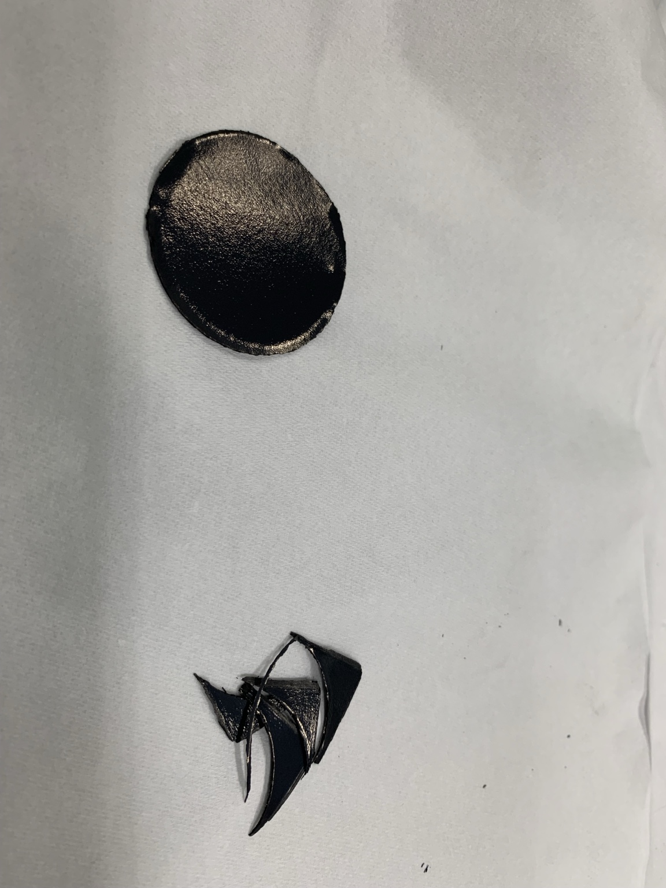
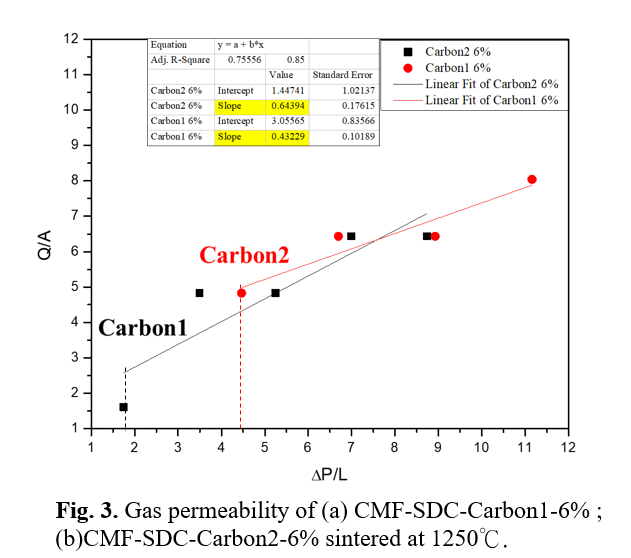
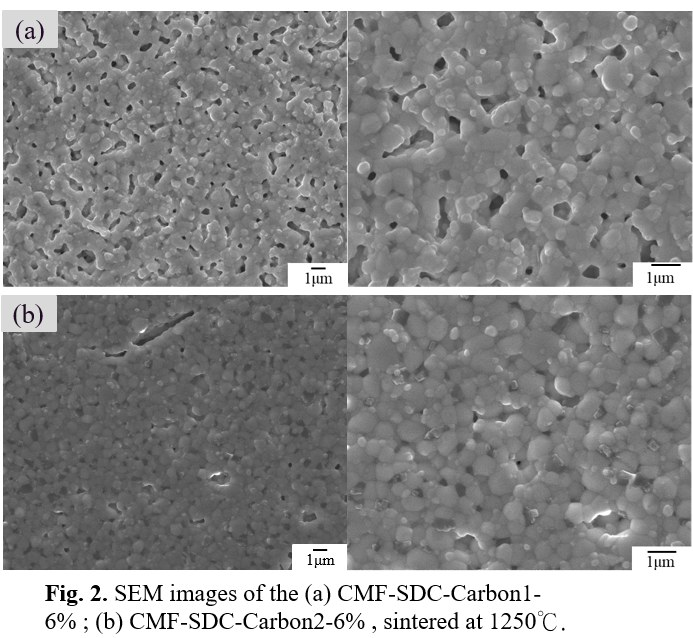
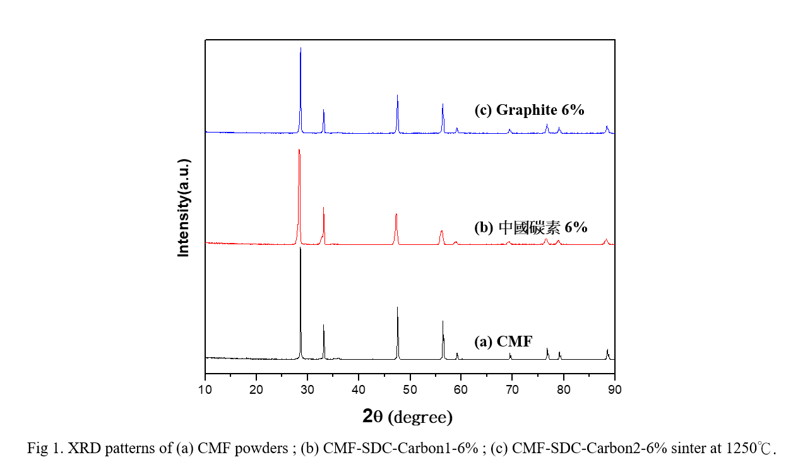
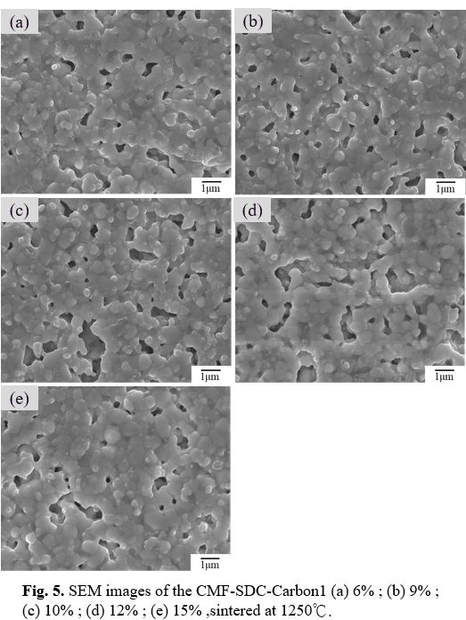

Graduate Student in Chemical Engineering at Oregon State University
Modeling • Simulation • Materials Research • Process Engineering
Download Resume LinkedInHello, my name is Ting-Wei Chen. I am a graduate student in Chemical Engineering at Oregon State University. My academic background includes transport phenomena, reaction engineering, materials characterization, process modeling, and simulation.
Through coursework and research projects, I have developed experience in experimental design, ceramic processing, COMSOL modeling, data analysis, and technical communication. My professional interests include process engineering, semiconductor manufacturing, materials research, and advanced manufacturing systems.

Investigated gas permeability of high-temperature porous ceramic materials for SOEC applications. This project involved CMF powder synthesis, carbon pore former optimization, sintering, SEM, XRD, BET, and gas permeability testing.
Skills: SEM, XRD, BET, Ceramic Processing, Gas Permeability

Developed a mathematical and computational model for transport and reaction behavior in a catalytic microreactor. The project included Navier-Stokes simplification, velocity profile derivation, reaction kinetics, and COMSOL-based analysis.
Skills: COMSOL, Reaction Engineering, Transport Phenomena

Presented the fundamentals of Darcy flow and its application to fluid movement through porous materials. The project connected permeability, pressure gradient, and engineering applications in filtration, groundwater flow, and porous structures.
Skills: Fluid Mechanics, Porous Media Flow, Engineering Communication

XRD was used to evaluate phase stability after sintering at 1250°C.

SEM images were used to observe pore structure and surface morphology.
Gas permeability testing was used to compare transport performance across porous ceramic samples.
Email: peter6600peter6600@gmail.com
LinkedIn: www.linkedin.com/in/tingweichenosu